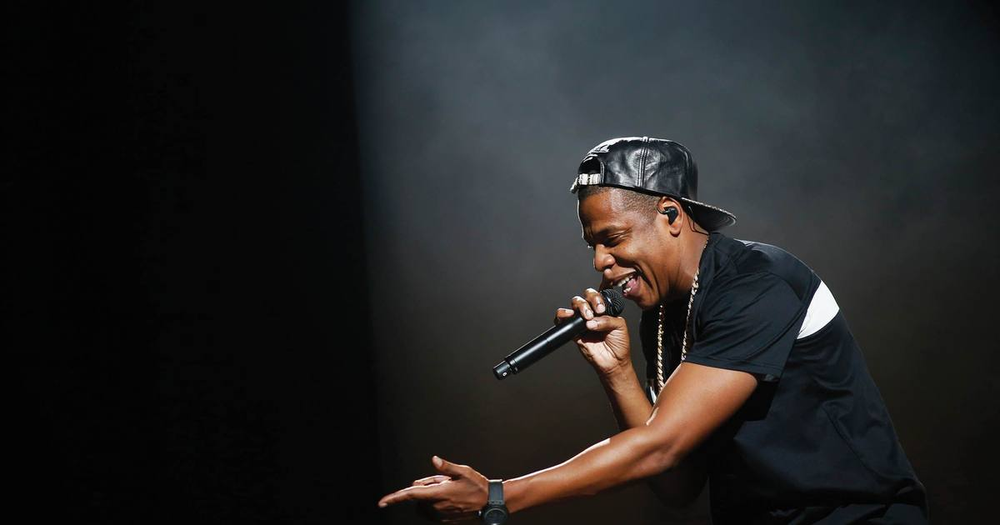

JAY-Z to Headline the Super Bowl LXI Halftime Show
JAY-Z will headline the Apple Music Super Bowl LXI Halftime Show on February 14, 2027 at SoFi Stadium — the man who has picked the halftime performer since 2019 picking himself.

JAY-Z is headlining the Super Bowl halftime show. The NFL, Roc Nation and Apple Music announced Monday night that the rapper will perform the Apple Music Super Bowl LXI Halftime Show on February 14, 2027 at SoFi Stadium in Inglewood, California, with the announcement dropping at halftime of Monday Night Football's Cowboys-Eagles game.
The announcement
The show airs on ESPN, ABC and Disney+, streaming on Disney+ and the ESPN app. It caps a banner year built around "JAY-Z 30," the 30th anniversary celebration of his debut album, Reasonable Doubt — including two shows at the very same SoFi Stadium on October 23 and 24, with appearances from Snoop Dogg, Dr. Dre, DJ Khaled and more.
"From Reasonable Doubt to standing on the Super Bowl halftime stage, this has been a journey," JAY-Z said in a statement. "Thirty years of music, work, and culture on the world's biggest stage. This run continues to be a dream come true." Roc Nation announced the news on Instagram with the caption: "GOAT's out of the bag."
The man who books the show books himself
This is the twist that makes the booking more than a big name. Roc Nation has produced the halftime show since 2019, and JAY-Z has had the deciding hand in picking the performer every year since. This time, he picked himself.
NFL Commissioner Roger Goodell said the moment has been on his wish list since day one of the partnership. "For several years, we've had the privilege of working closely with JAY-Z and Roc Nation, and I've seen the extraordinary impact he has had on the Super Bowl Halftime Show," Goodell said in a statement. "When we first reached an agreement with Roc Nation to produce the show, I had just one request: that JAY-Z take the stage himself one day, whenever the moment felt right to him."
The arc here is real. JAY-Z famously rapped about turning down a Super Bowl invitation on The Carters' 2018 track "APESHIT," a stance widely linked to his support for Colin Kaepernick. Eight years later, he steps onto the stage his own company helped rebuild.
The bar he has to clear
The last three halftime shows — Usher, Kendrick Lamar and Bad Bunny, who headlined last year's Super Bowl LX — all landed among the four most-watched Super Bowl performances of all time, according to Billboard. Michael Jackson's 1993 set is the only one in that top four that JAY-Z didn't have a hand in selecting.
He also follows family: his wife, Beyoncé, headlined the Super Bowl XLVII halftime show 14 years ago. Now the game's biggest stage gets the artist behind "99 Problems," "Hard Knock Life" and "Empire State of Mind" — and a catalog deep enough to fill a career-spanning set without breaking a sweat.
W or L? The booking sells itself. The curator finally taking his own stage, 30 years after Reasonable Doubt, on Valentine's Day in Los Angeles. That's a W.